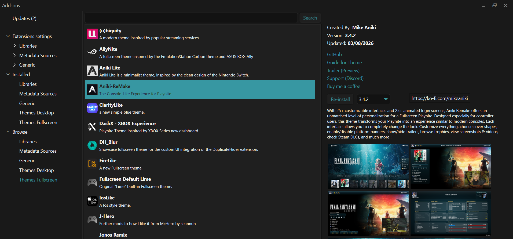

Install Aniki ReMake
This page shows the recommended first-time installation path.
Aniki ReMake has two core parts:
- Aniki ReMake — the Playnite Fullscreen theme.
- Aniki Helper — the companion add-on used by the theme for settings, menus and Aniki features.
In this guide, an integration means an optional Playnite add-on / extension that Aniki can use to add or expose an extra feature.
Optional integrations are explained later. First, get the theme and Aniki Helper working.
1. Install the Aniki ReMake theme
Use Playnite Desktop mode.
- Click the Playnite icon in the top-left corner.
- Select Add-ons... or press F9.
- Open Browse.
- Open Themes Fullscreen.
- Search for Aniki ReMake.
- Select it.
- Click Install.
- Click Save if Playnite asks you to apply the changes.

images/install-aniki-remake-01.png2. Activate Aniki ReMake in Fullscreen
After installing the theme:
- Press F11 to open Playnite Fullscreen.
- If the default Playnite Fullscreen theme is still active, open the Fullscreen main menu.
- Select Settings.
- Select Visuals.
- Find Fullscreen Theme.
- Choose Aniki ReMake.
- Go back to the main Fullscreen interface.

images/install-aniki-remake-02.png3. If Aniki Helper is missing or outdated
When Aniki ReMake starts, it checks whether a compatible version of Aniki Helper is available.
If it is missing, the theme displays an ANIKI HELPER REQUIRED screen.
If the installed version is too old, the theme displays an Aniki Helper needs an update screen.
This screen is not the First Setup Assistant. It is a requirement check that appears before normal Aniki setup can continue.
If Aniki Helper is missing
- Select Install Aniki Helper on the warning screen.
- Let Playnite install the add-on.
- Restart Playnite when requested.
- Return to Fullscreen.
If Aniki Helper needs an update
- Select Update Aniki Helper on the warning screen.
- Let Playnite update the add-on.
- Restart Playnite.
- Return to Fullscreen.

images/install-aniki-remake-03.pngInstall or update Aniki Helper manually
Use this method if the button on the warning screen does not work, or if you prefer to manage the add-on from Desktop mode.
Install
- Open Playnite Desktop.
- Press F9.
- Open Browse → Generic.
- Search for Aniki Helper.
- Select it and click Install.
- Click Save.
- Restart Playnite.
Update
- Open Playnite Desktop.
- Press F9.
- Open Updates.
- Install the Aniki Helper update if one is listed.
- Restart Playnite.
If the newest Aniki Helper cannot be installed because your Playnite version is too old, update Playnite first.
4. First Setup Assistant
Once Aniki Helper is installed and compatible, a new Aniki installation can continue to the First Setup Assistant.
This is a separate system from the Helper missing/update warning.
The First Setup Assistant configures things such as:
- profile;
- startup behavior;
- interface preset;
- theme color;
- Details layout;
- visual/performance preset;
- trailer behavior;
- optional add-ons.
Continue with:
Optional add-ons / integrations
You do not need every supported add-on.
The current First Setup Assistant can offer compatible integrations such as:
- PlayniteAchievements
- UniPlaySong
- Extra Metadata Loader
- Extra Metadata Fullscreen Mode Helper
- Screenshots Visualizer or Screenshot Utilities
- Screenshot Utilities - Local Provider when required
- AudioSwitcher
- Custom Fade Animations for Playnite (CustomFadeAnim)
The assistant can guide you through installing the optional add-ons you select.
Aniki Helper itself is different: it is a core requirement and is handled by the Aniki Helper requirement/update screen described earlier.
Also recommended: ControlUp
ControlUp is not required by Aniki and is not part of the First Setup integration list, but it is useful for controller-focused setups.
It can detect a controller connection and either:
- ask whether you want to switch Playnite to Fullscreen; or
- switch directly to Fullscreen automatically.
See:
New to Playnite? → Automatically switch to Fullscreen with a controller